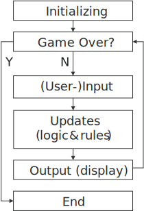

Creating functionality
You know now how to work with graphics in game on an abstract level, but you don't know how to actually control and move (translate) the graphics to simulate the game functionality you want. This sections aims at teaching you how. It is actually what being a game programmer is all about. The problem is always the same; you have an idea, how do you realize it using your tool? There are always multiple solutions, some so advanced you have no idea where to start and here's where the abstract programming comes to the rescue. More on that soon, you'll first need to know where to implement the functionality.
The Game Loop
First of all, what is a game loop? All game development technologies support the concepts of loops in one way or another. Loops are defined functionality that you want to be repeated, with either "infinite" or a defined number of iterations. So what are games? A loop of functionality that performs input/output, usually to allow user interaction and to draw graphics on screen. Games are dynamic as the user's actions affect the output. There is no way you will be able to get there without loops, hence the «Game loop", which is just a common name for the loop implementing gameplay mechanics. Game loops are typically "infinite" as they run until the user decides to quit the game or they reach the state of «game over». The following example is a relatively generic example of the simplest game loop, and actually also the simplest game engine. Do not try it in JavaScript or ActionScript as it will freeze your browser or Flash player.
// This could also be "while (true)"
while(1) {
// Game code here
}No matter what, every single game ever made has a game loop and this is where you implement your functionality. Even the simple point and click games where the loop itself is hidden to the developer. These are often event based games, and it is true that the developer will never see the actual implementation of the loop. But hold on, events might seem like magic but someone or something needs to maintain the event system. This includes storing events, like when the user clicks somewhere on the screen, and executing the so called event listeners ,which is the functionality that you have defined to be executed when a specific event occurs. And as you might have guessed; Maintaining the events requires a loop implemented by the technology you are using. Usually by the virtual machine like the Java runtime environment, the Adobe Flash Player, or a web browsers JavaScript engine. The following examples show the simplest game loop in JavaScript and ActionScript. Do not be alarmed if you don't get it right away.
/* JavaScript*/
// Create the game loop functionality
function gameLoop() {
// Game code here
};
// Fire of the game loop at 60 frames per second (1000ms / 60)
// This is in theory an event firing off at a given interval.
window.setInterval(gameLoop, 1000 / 60);/* ActionScript - frame rate is set in project settings */
// Create the game loop functionality
function gameLoop(e:Event):void {
// Game code here
}
// Fire of the game loop every frame
stage.addEventListener(Event.ENTER_FRAME, gameLoop);Short on frames and frame rate
The word frame is a well known word within game development, but yet a bit vague. In general, it is used to represent an update and is often associated with benchmarking. This by measuring the maximum frame rate your device is capable of producing. Frame rates are typically measured in frames per second (FPS), which means number of updates per second. In terms of computer games, the frame rate is usually associated with the graphics and the Graphics processing unit (GPU). It describes how many images a game renders and draws to the screen per second. Most modern computer games have a graphical frame rate of 30-60 fps, which is sufficient to give a smooth experience as the average human eyes works at 25 fps.
From a developer's perspective, a frame is often used to describe one iteration (loop/round) in the game loop. FPS is in this case used to measure how efficient your game code is, and you want this to go as fast as possible! It is linked to the graphical fps as it is up to the game loop to perform the render call (often at the end), and a slow loop will thus limit the rendering fps. This is in modern games and engines avoided by utilizing individual threads for heavy and slow tasks, like AI, file operations, and networking. It is actually now normal to limit the game loop fps on the client side to 30-60 fps as there is no point of going any faster. It will just eat the CPU's processing power and won't make any difference to the user. Game servers are however still utilized at 100%, as they need to handle as many players as possible within the shortest amount of time.
I will from now on use the word frame in the context of the game loop, unless I specify that I am talking about graphics.